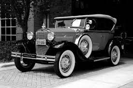

A invenção dos carros é um marco importante na história da humanidade, marcando uma transformação fundamental na forma como nos deslocamos e interagimos com o mundo ao nosso redor. Aqui está uma visão histórica desse processo:
Pré-História: Desde tempos antigos, os seres humanos buscavam maneiras de facilitar o transporte. Isso começou com formas primitivas de transporte, como carruagens puxadas por animais, trenós e outros veículos rudimentares.
Século XVIII e XIX: Com a Revolução Industrial, houve um aumento significativo na necessidade de transporte eficiente de mercadorias e pessoas. Isso levou ao desenvolvimento de locomotivas a vapor e barcos a vapor, mas ainda não havia uma solução prática para o transporte terrestre individual.
Fins do Século XIX: Outros inventores, como Gottlieb Daimler e Wilhelm Maybach, também contribuíram significativamente para o desenvolvimento dos primeiros carros motorizados. Suas invenções estabeleceram os fundamentos para a indústria automobilística moderna.
Início do Século XX: Com o surgimento de empresas como a Ford Motor Company, liderada por Henry Ford, a produção em massa de carros tornou-se viável. A introdução da linha de montagem por Ford em 1913 revolucionou a produção automotiva, tornando os carros mais acessíveis para o público em geral.
Século XXI: A busca por sustentabilidade e eficiência energética tem impulsionado a indústria automobilística a explorar novas tecnologias, como carros elétricos e híbridos. Além disso, a conectividade e a automação estão se tornando cada vez mais comuns, preparando o cenário para uma nova era de mobilidade. |
 |